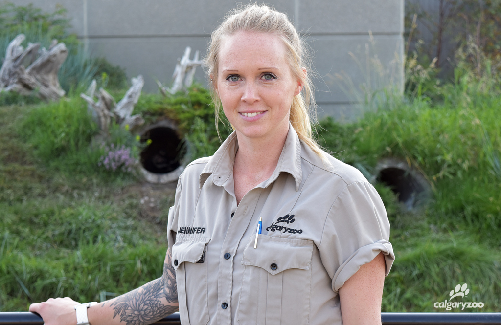

Sammy

Functionality:
Seeking out resources around her to stay in recovery
Gender:
Age: 38
Job:
Family:
Technology:
-2019 Macbook Pro on latest OS with Google Chrome
-Big presence on social media
Attitudes & needs:
-Sammy needs accountability, especially others in recovery so she doesn’t fall off the wagon
-Sammy is going through a rough patch since her husband just passed and she’s struggling
-Sammy is angry and needs an outlet
Habits:
-Sammy enjoys outdoor activities and is fit
-Sammy is relatively health but goes through fad diets
Goals:
-To find a support group that will hold her accountable
-To find other relatable people
-To maintain recovery lifestyle
User story:
As a user, Sammy wants to seek out resources to help her maintain recovery
Use case:
-Sammy is a relatively young and healthy individual who seeks resources to maintain in recovery
-Pre-condition: Sammy uses the resources to find activities to suit her lifestyle
-Post-condition: Sammy finds a supportive community
Interaction flow:
-Sammy clicks on the resource tab
-NMgetssober loads the resources by activity type
-Sammy scrolls through the page for outdoor activities section
-Sammy clicks on equine therapy to learn more about it
-NMgetssober loads a list of places with equine therapy
-Sammy clicks the one in her area
-NMgetssober loads information